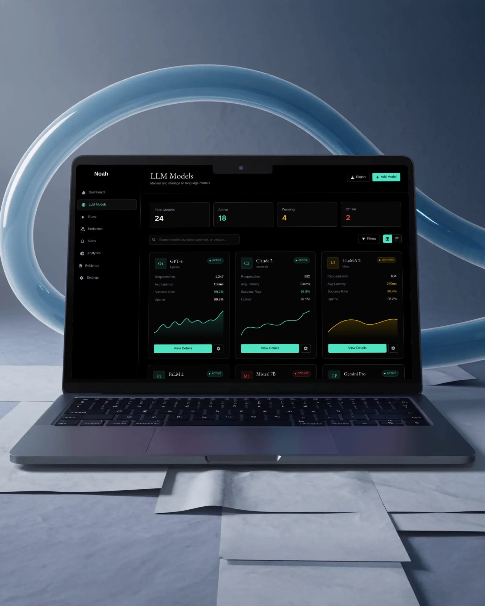
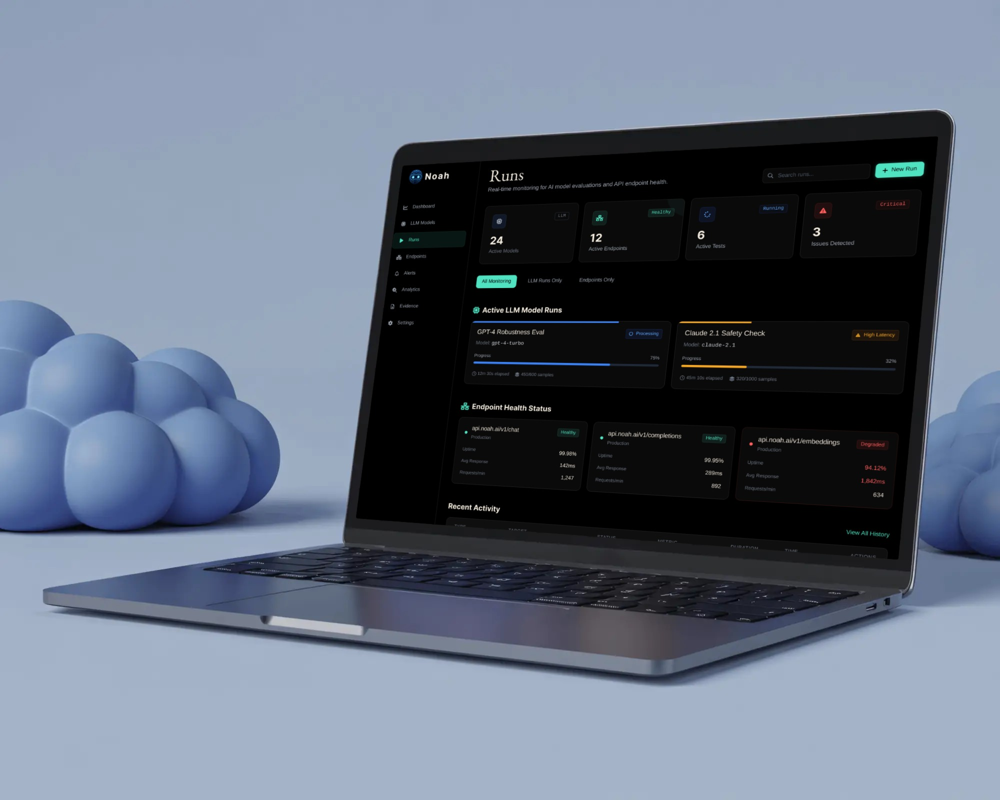
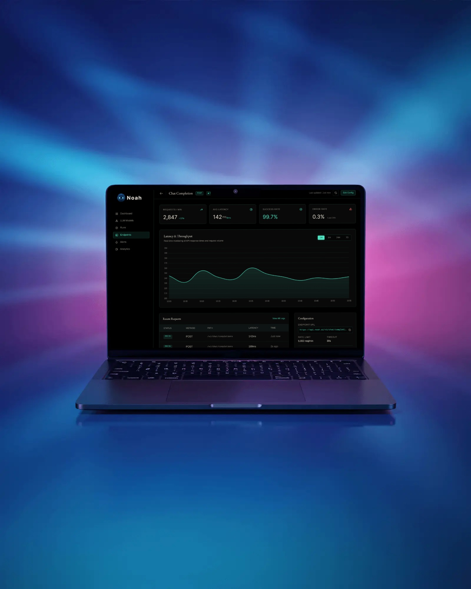
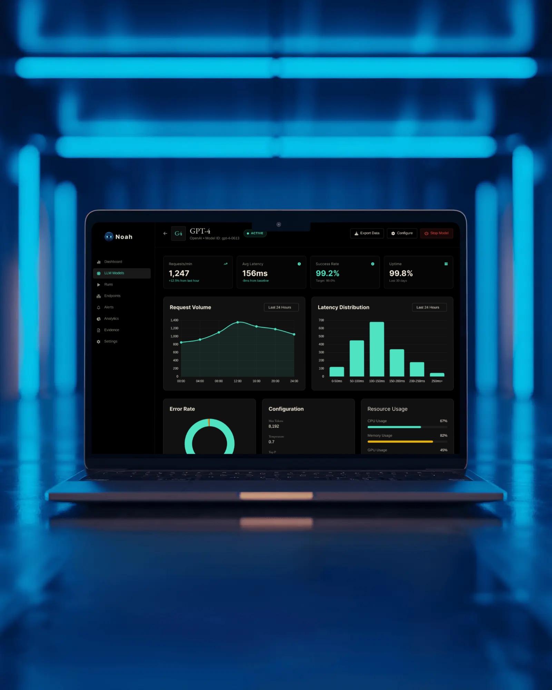

The Challenge
As the sole designer for a stealth-mode startup, I was tasked with creating a platform that could visualize complex AI model metrics for technical users while maintaining a premium, "enterprise-grade" aesthetic that builds investor confidence.
Drift Detection
Visualizing the subtle shift in model accuracy over time across millions of data points.
Scalable Systems
Building a flexible design system from scratch that could evolve with the rapid engineering pivots.
Core Dashboard Architecture



The Solution
I designed Noah with a focus on "Data Clarity." By utilizing high-contrast visuals and interactive drill-downs, researchers can identify model anomalies in seconds rather than hours.
The branding was designed to be futuristic yet stable, using a deep monochromatic palette with green accents to signify growth and precision.
